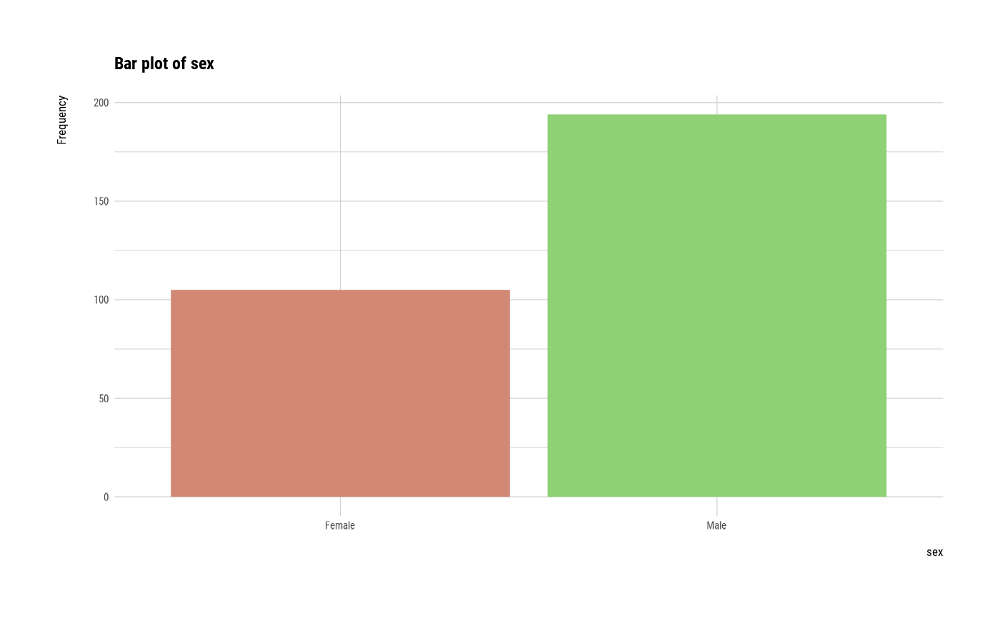
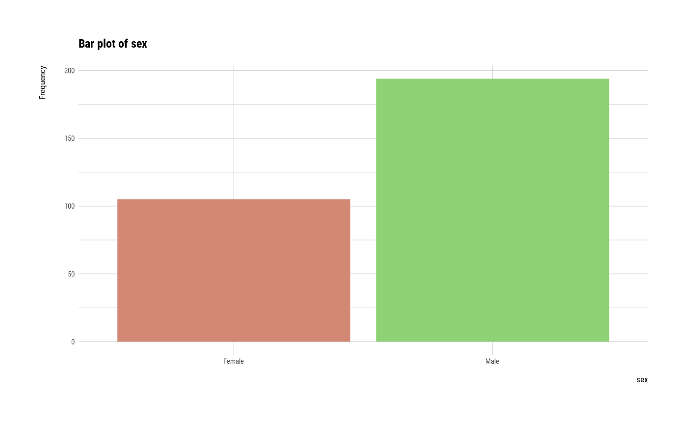

The univar_category() calculates statistic of categorical variables that is frequency table
univar_category(.data, ...)
# S3 method for data.frame
univar_category(.data, ...)Arguments
- .data
a data.frame or a
tbl_df.- ...
one or more unquoted expressions separated by commas. You can treat variable names like they are positions. Positive values select variables; negative values to drop variables. These arguments are automatically quoted and evaluated in a context where column names represent column positions. They support unquoting and splicing.
Value
An object of the class as individual variables based list. The information to examine the relationship between categorical variables is as follows each components.
variable : factor. The level of the variable. 'variable' is the name of the variable.
n : integer. frequency by variable.
rate : double. relative frequency.
Details
univar_category() calculates the frequency table of categorical variables. If a specific variable name is not specified, frequency tables for all categorical variables included in the data are calculated. The univar_category class returned by univar_category() is useful because it can draw chisqure tests and bar plots as well as frequency tables of individual variables. and return univar_category class that based list object.
Attributes of return object
Attributes of compare_category class is as follows.
variables : character. List of variables selected for calculate frequency.
Examples
# \donttest{
library(dplyr)
# Calculates the all categorical variables
all_var <- univar_category(heartfailure)
# Print univar_category class object
all_var
#> $anaemia
#> anaemia n rate
#> 1 No 170 0.5685619
#> 2 Yes 129 0.4314381
#>
#> $diabetes
#> diabetes n rate
#> 1 No 174 0.5819398
#> 2 Yes 125 0.4180602
#>
#> $hblood_pressure
#> hblood_pressure n rate
#> 1 No 194 0.6488294
#> 2 Yes 105 0.3511706
#>
#> $sex
#> sex n rate
#> 1 Female 105 0.3511706
#> 2 Male 194 0.6488294
#>
#> $smoking
#> smoking n rate
#> 1 No 203 0.6789298
#> 2 Yes 96 0.3210702
#>
#> $death_event
#> death_event n rate
#> 1 No 203 0.6789298
#> 2 Yes 96 0.3210702
#>
# Calculates the only smoking variable
all_var %>%
"["(names(all_var) %in% "smoking")
#> $smoking
#> smoking n rate
#> 1 No 203 0.6789298
#> 2 Yes 96 0.3210702
#>
smoking <- univar_category(heartfailure, smoking)
# Print univar_category class object
smoking
#> $smoking
#> smoking n rate
#> 1 No 203 0.6789298
#> 2 Yes 96 0.3210702
#>
# Filtering the case of smoking included NA
smoking %>%
"[["(1) %>%
filter(!is.na(smoking))
#> smoking n rate
#> 1 No 203 0.6789298
#> 2 Yes 96 0.3210702
# Summary the all case : Return a invisible copy of an object.
stat <- summary(all_var)
# Summary by returned object
stat
#> variables statistic p.value df
#> 1 anaemia 5.622074 1.773565e-02 1
#> 2 diabetes 8.030100 4.600629e-03 1
#> 3 hblood_pressure 26.491639 2.646812e-07 1
#> 4 sex 26.491639 2.646812e-07 1
#> 5 smoking 38.290970 6.094401e-10 1
#> 6 death_event 38.290970 6.094401e-10 1
# plot all variables
plot(all_var)


 # plot smoking
plot(smoking)
# plot smoking
plot(smoking)
 # plot all variables by prompt
plot(all_var, prompt = TRUE)
#> Hit <Return> to see next plot:
# plot all variables by prompt
plot(all_var, prompt = TRUE)
#> Hit <Return> to see next plot:
 #> Hit <Return> to see next plot:
#> Hit <Return> to see next plot:
#> Hit <Return> to see next plot:

#> Hit <Return> to see next plot:
#> Hit <Return> to see next plot:
#> Hit <Return> to see next plot:
#> Hit <Return> to see next plot:
#> Hit <Return> to see next plot:

#> Hit <Return> to see next plot:
#> Hit <Return> to see next plot:
 # }
# }